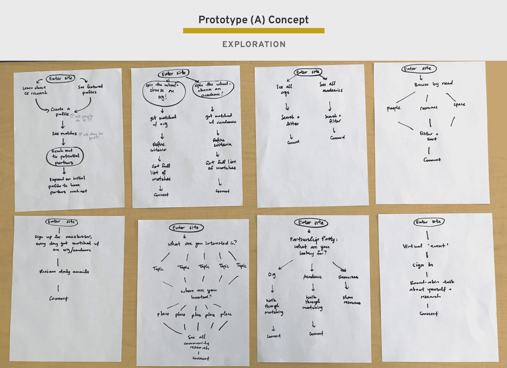

Problem
Health research has long been considered solely an academic pursuit, and it’s extremely common for researchers to conduct their experiments without the contributions and feedback of the greater communities they study. This makes for both bad relationships and bad science.
Thankfully, a new research approach is starting to gain traction. Community-engaged research (CEnR) is a philosophy and set of research methods that aim to bring community partners into the research process, at any point from study design and implementation to analysis and dissemination.
However, since the approach is so new, there is very little infrastructure in place to help it take root and thrive.
Methods Overview
Our design process unfolded through six phases, as seen in the diagram below.

Phase 1: Strategize
Goals
We partnered with the MICHR Community Engagement (CE) team for this work. The CE team’s overarching goal is to foster academic and community relationships for CEnR in all phases of the research process, but we wanted to focus our project on just one segment: the act of finding and creating connections.
Project Goal
Create and grow connections between community partners and academics statewide.
Audience
Although many parties are active in the CEnR space, we used a target audience model to identify the two key audience segments we would focus on for our solution:
- UM faculty doing community-engaged research
- Community organization members
Phase 2: Discover
User Interviews
We conducted a series of interviews with both users from our key audience segment, as well as expert interviews from other organizations that had tackled similar challenges before.
We chose 7 interviews to analyze with an affinity map, consisting of 3 community organization members and 4 academics at U-M.
Interview Highlights
- We invited CE team members to the calls, which exposed them directly to their users. In addition to giving them context for our subsequent design decisions, it gave us the power of their buy-in.
- Thankfully the CE team had strong connections to their users, and we were able to interview people from different backgrounds. Having a diversity of users for interviews gave us a strong foundation for knowing what to build in later phases.
- By the end, we began to hear consistent things from each interviewee. Of course, each person’s specific experience would change, but seeing so much overlap in the comments and sentiment is what signaled to us that we had done enough interviews.
Interview Challenges
- Although the CE team had strong ties to the community, it was challenging to find the right people to interview—especially on the academic side where the team’s relationships were weaker.
- It was a real benefit to have much of the CE team listen in on the interviews, but trying to coordinate with so many people’s schedules became cumbersome for the interview process and ultimately slowed the speed of our data collection.
- The final themes did not represent every single insight. As is the question with all user research artifacts, how do you make sure you’re capturing everything you need to?
User Co-Creation Session
The CE team held an annual retreat that would bring together 80 of our core users, and we did not want to pass up this opportunity to learn directly from them.
We split our 75-minute session into 3 parts, each one giving us valuable takeaways for our user research:
- Share stories and challenges
- Brainstorm solutions
- Build something!
Part 1: Share CEnR experiences, particularly noticing the challenges on the story chart
By sharing stories with each other, each group built shared context. Sharing their challenges gave people an outlet for their frustrations and set them up to create solutions in the next part of the session.
Our research takeaways: user narratives to pull from in our analysis.
Part 2: Use post-its to brainstorm ideas for solutions to those challenges
In a rapid brainstorming session, each group member used sticky notes to generate a series of ideas to address the challenges brought up in the story. By first giving each participant individual time to write down ideas before sharing them all with a group, there was space for both independent reflection and group synthesis.
Our research takeaways: A series of ideas generated by the users.
Part 3: Choose one idea and build it with crafting supplies!
After a series of solutions had been brainstormed, we revealed a table of craft supplies. Each group picked an idea and built a model of it out of materials like construction paper, pipe cleaner, glass bottles, and yarn. This part got people the most excited and engaged with the session, and we got an endless variety of creative solutions.
Our research takeaways: Insight into what users most wanted, and how they’d see it come to life.
Co-Creation Highlights
- The session itself was tons of fun! People really enjoyed creating with their hands, and we gained substantial buy-in from our users for our project. (Over 20 people of the 80 attending indicated they’d be interested in helping with the project.)
- We gained a deeper understanding of not just what the users said they want, but what they were committed to enough to build. (One group created a match.com-like website that became a huge source of inspiration in our prototyping phase.)
- People solved for problems all along stages of the CEnR process, helping us gain a comprehensive picture of the landscape and see more gaps that we could fill.
Co-Creation Challenges
- It was difficult to capture all of the co-creation artifacts. We took as many photos and videos as possible to capture the process, but because we didn’t have enough time for everyone to share, a lot of insight was lost.
- We only had 75 minutes, and each part felt rushed. Part of that was hard to work around since we had a limited time slot within another team’s greater event. But we could have been more strategic about the allocation of time to each part.
- We gave too many instructions verbally, and people often missed small details that we would have to repeat. For future sessions, we will make instructions available visually so people can easily follow along.
Key User Insights
Consolidating the themes we gathered from our interviews and co-creation session, we formed a list of 8 key user insights.
I created visual interpretations of each insight to bring clarity to the concept as we shared our findings. (My little doodles made such an impact with communicating to our partner team that I wrote about it in a blog post: The thoughtful doodle.)
Personas
Wrapping up our Discovery phase, we created a key set of User Personas to give us guidance about our audience as we moved into the Prototyping phase.
Phase 3: Prototype (A) - Matching
Concept Development
As we began to enter the phase of testing out solutions based off of the deep user learning we had done, we created a How Might We statement to guide us in our first prototype.
How Might We
How might we connect a community partner and a CEnR researcher around a potential project?
Knowing we needed to tackle just a slice of the entire CEnR process for our first prototype, we chose to focus on two key domains of opportunity: matching partners and defining a project. These are the two use cases we wanted to attempt to solve for first.
Focusing on the matching piece, we decided to center our first prototype around matching. Our core app functionality would be to make pairings between community members and academics, and after these matches were made we would offer friendly suggestions for how to most effectively form a partnership.
Implementation Exploration
To explore different ways of satisfying our domains of opportunity, I used the Crazy 8’s method to brainstorm possible implementations.
Building off our pairing model, we worked through a rough flow diagram to indicate the components we’d have to build in order to test our concept.

Paper Prototypes
Building off the basic implementation diagram, we decided wanted to test three models of matching: a directory, a matching service, and a chatbot.
We decided to bring the models to life through the use of paper prototypes. Using this method, we presented a minimum level of fidelity in order to signal to our users that we are in the very beginning stages of forming a product. We wanted users to feel unrestrained to give their feedback, unfiltered by intimidating visual design.
User Testing
We held 11 feedback sessions involving:
- 4 community organization members
- 2 U-M academics
- 6 experts (both U-M and external)
During our user tests and feedback sessions, we gathered information around their experiences forming CEnR matches, as well as their reactions to three different models we created.
In designing the chatbot I learned a good lesson about how important it is to choose the right fidelity for the feedback you want in a test. I wrote about it in this article: When polish gets in the way.
Learnings and Pivot
We consolidated user feedback on each screen of the paper prototypes, capturing comments in context of the user’s screen.
Our analysis revealed the following themes:
- People are looking to build a network, not match over a single project.
- Community members don’t trust a computer to help them form a relationship.
Pivot
We realized that scoping the platform to only match people when they were actively looking for a project was too narrow. People were looking to connect with others in general, to see where a relationship might form in the future. We decided to make a pivot and instead of creating a matching platform, we explored what it would look like to create a more of a social network around CEnR.
Phase 4: Prototype (B) - Network
Concept Development
As we focused more on a networking site as opposed to a singular match, we reframed our How Might We to open more possibilities.
How Might We
How might we facilitate CEnR researchers and Michigan communities to grow their own networks and foster a community of support?
We modified our domains of opportunity to think more broadly about connections and network support.
User Stories
To explore how we could solve the challenges presented with our domains of opportunity, we created a rough draft of user stories that would guide us in our implementation.
Wireframe Prototypes
Since we were more confident about this network direction, we decided to choose wireframes as our prototype fidelity, rather than another round of paper prototypes.
The wireframes allowed us to more deeply explore what it would look like to make connections in the CEnR space, considering the many differences among the two audiences of community members and academics.
User Testing
At this point, the COVID-19 pandemic had shaken the world, and we were limited in our round of testing, both with how many users we could recruit as well as the nature of those sessions.
We therefore held a short round of user feedback for 3 users, exposing them to the wireframes for the key features of the networking app: finding connections, seeing their profile pages, and reaching out.
Learnings and Pivot
Our short testing session still proved fruitful, as we identified major areas we could improve upon:
- People need support in all phases of the CEnR journey, not just the piece about finding a partner.
- People want a place they can reliably turn to for any CEnR need, or to point new people to.
- People often need tailored resources and want a more direct line to the MICHR CE team.
Pivot
We realized we needed to expand our scope and consider adding other elements to the platform such as resources and events. We needed to create a more comprehensive space for all CEnR needs, broadening both the offerings and the relevance of the platform.
Phase 5: Prototype (C): Hub
Concept Development
Learning that we needed to create a more comprehensive CEnR experience, we broadened our original HMW statement to encompass the possibility of providing support beyond just finding other people.
How Might We
How might we create a centralized hub for community-engaged research needs across the state of Michigan?
Our domains of opportunity expanded to include resources and education components.
Service Blueprint
To create a more integrated and holistic experience around the “hub,” we worked with the Community Engagement team to establish a rough service blueprint.
We wanted to show the different user touchpoints with the website and its automated emails, while also emphasizing the CE Team touchpoints with people if they were in certain stages states within the user journey.
User Stories
To think through the details of implementation, we created a thorough review of the platform and created a list of user stories to enumerate what we needed to design.
Creating the list in AirTable allowed us to use the list as a Kanban board to track progress during the development stage.
Wireframes
In addition to the network screens from Prototype (B), we worked on prototyping screens for the additional hub sections.
Events and resources were the biggest additions, and we also wanted to create a home dashboard to create a starting place from which to help navigate to the different sections of the site.
UI Design
Using atomic design principles, I created my designs by establishing the pattern for atoms, molecules, organisms, templates, and pages.
Because I knew upfront that I would be developing our prototype application in Bubble, I would alternate between designing in Sketch and designing in Bubble. Gaining a deep understanding early on about the ways Bubble handed its UI (as well as its very many limitations) helped me keep the designs realistic and polished, while speeding up front-end development time.
The UI of key pages and elements are seen below.
No-Code Development
We built this application through Bubble.io, a no-code platform that allows people to build full applications without writing (much) code.
To gain a better understanding of the underlying structure, we prepared certain assets for development including a site map and back-end data model. We used Whimsical to keep these flexible enough so they could change as we continued to iterate on the protoype in the future.
We then used the Bubble editor to implement the front-end UI and create the back-end flows. We hired a student intern to help with hooking up the workflows and working out the logic for various components of the site.
The most challenging parts of programming came with the connection matching criteria, as well as hooking up the back-end processing for email digests and email verification flows.
Phase 6: Release to Public
We launched the product on October 13, 2020 at a virtual community-engaged research retreat put on by the Community Engagement team. The site was met with initial excitement:
"This website is so impressive! Great work, MICHR CEnR team!"
"Love MReach already"
"I signed up! It was super easy. Thanks so much for this great resource."
"AWESOME!!! I AM SIGNED UP."
"Great job and really impressive!"
We hope to reach 100 users by April 2021, and 1000 by April 2022. Check back for updates!
Live Site
Take a look at the live site below or at www.mreach.org.